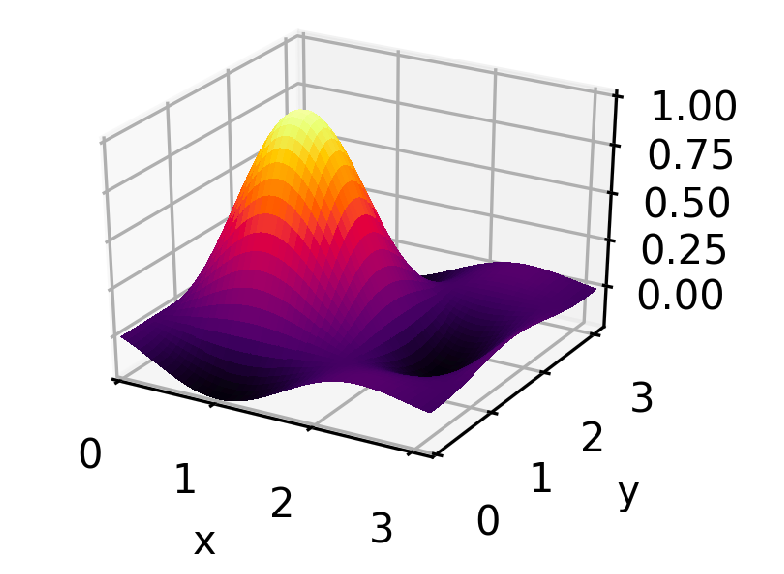
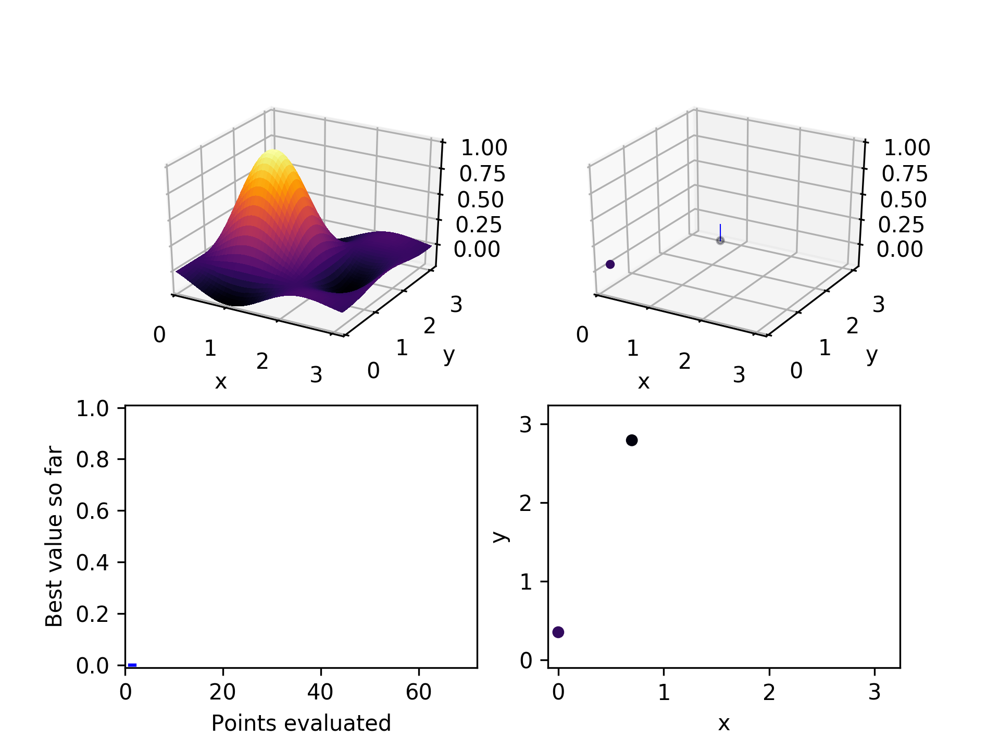
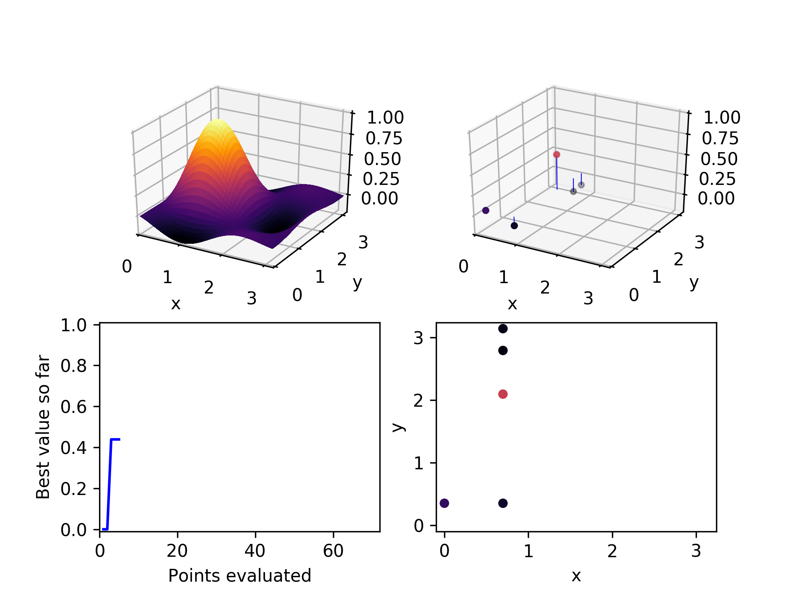
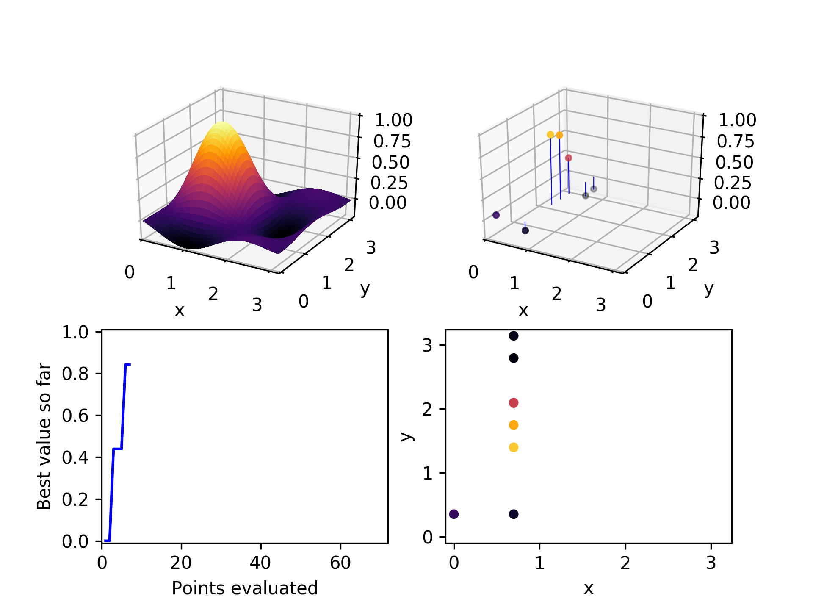
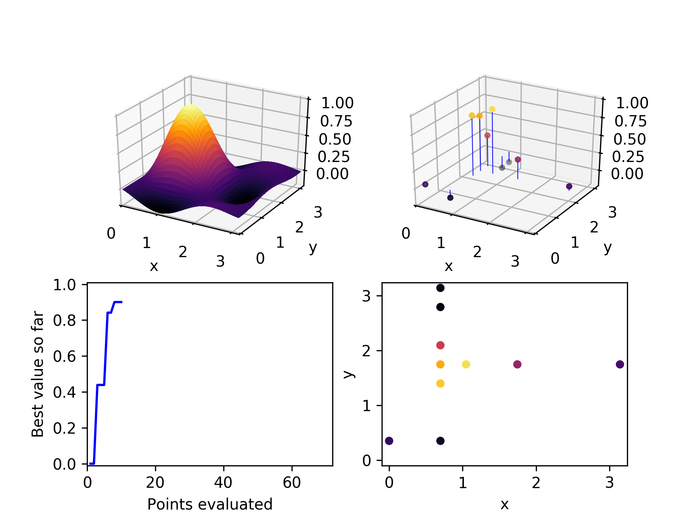
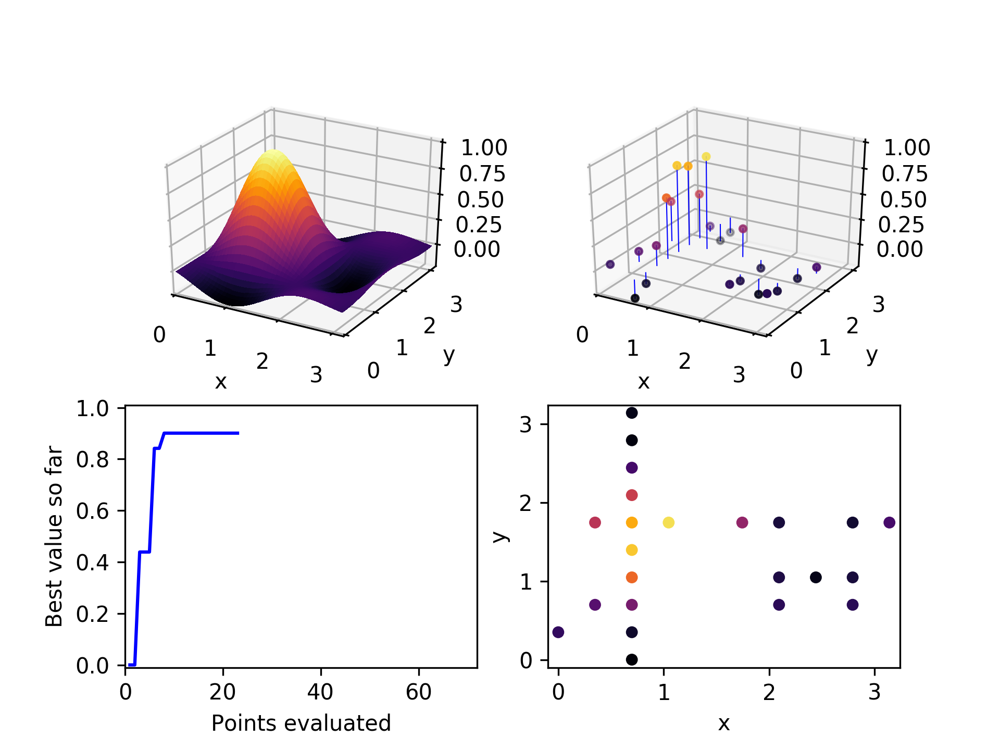
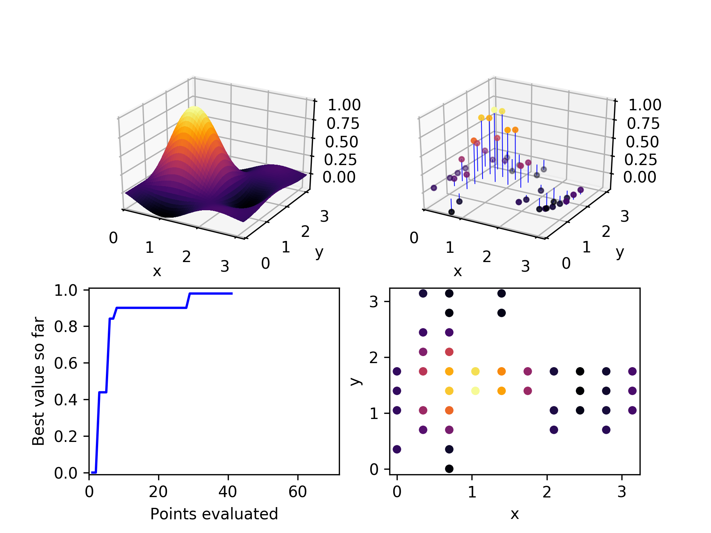
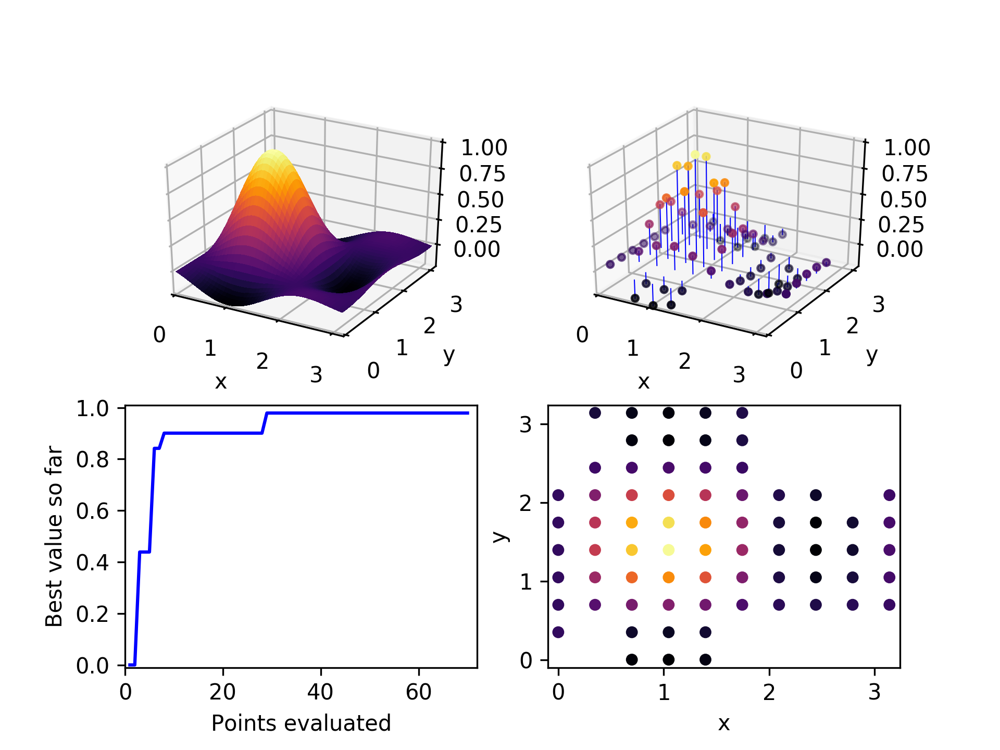

A discrete optimizer for hyperparameter optimization

I built Evolutionary Powell's method to use for hyperparameter optimization as part of Course 314. It is inspired by the original Powell's method, but has a stochastic element inspired by evolutionary approaches. A Python implementation of the algorithm is available in the Ponderosa optimization package under an MIT Open Source License.
Overview
Evolutionary Powell's method tries to find the global minimum of a loss function (cost function, error function) over a discrete space, meaning that each variable can only take on a finite number of unique values. It has a few main steps, which we'll illustrate by walking through the example in the animation above.

The loss function we'll be working with is a two-dimensional sinc function, which has a single pronounced peak and several shoulder peaks and dips surrounding it. The code for creating it and running the rest of this example can be found in this GitLab project.
The optimizer actually tries to find the lowest point in the the negative of this function — the global minimum — but for ease of visualization everything is flipped upside down before plotting, so it looks like it's trying to find the top of the peak. Both x and y are allowed to take on 10 distinct values between 0 and 3. The method can be applied to spaces of any number of dimensions, but a two-dimensional space gives the richest visualization.
There are a few main steps to Evolutionary Powell's method.
- Randomly select a few points and evaluate them.
- Make a list of the hyperparameters in random order.
- Choose a small number of previously-evaluated points to be parents. This will be a random choice, but weighted by performance so that points with the lowest error are more likely to be chosen.
-
For the first parent added, start at the top of the list of hyperparameters. Look for a small number of unevaluated child points along that line — points that are identical to the parent, differing only in the value of that particular hyperparameter. If no children can be found, check the next hyperparameter, until they have all been attempted.
If no children are found for the first parent candidate repeat the process with the next, but shift the list of hyperparameters by one so that a different hyperparameter is attemped first.
- Evaluate all the children found and start again at step 3.
Powell's method
This is a little like Powell's method where, starting from a single point, it finds the minimum along one dimension at a time, and the new best guess is moved iteratively to the new location of the minimum. ( There's a bit more to it than that, but those are the relevant parts.)
Powell's method typically assumes smooth, continuously varying functions, and seeks just to find the local minimum, so it alone isn't a good fit for hyperparameter optimization where we are looking for a global minimum in a discrete space. But it at least is nice in that it doesn't require differentiation and it manages a large number of dimensions gracefully.
Evolutionary algorithms
In high-dimensional discrete spaces, evolutionary algorithms have proven themselves useful. They don't have to assume anything about the smoothness of a function, and they can be used as an anytime algorithm, meaning that you can interrupt the algorithm at any time and have a workable best-so-far answer to work with.
Evolutionary algorithms are especially useful when there are far more points in the space than could ever be exhaustively explored. They make the assumption that the lowest-error points will have at least some traits in common with other low-error points. In our case, that assumption is expressed as "successful points will have some identical hyperparameter values". Choosing the most-successful-so-far points as parents, and varying one of their hyperparameter values to create children, is a way to exploit this assumption. This is also where the similarity to Powell's method comes from. Exploring one dimension at a time, starting from a high performing point, looks a lot like the iterative one-dimensional optimization that Powell's method performs.
It's worth taking a detailed tour of the method, step-by-step.
1. Randomly select a few points

The first thing we need is to choose a few points to start with. We don't want to assume anything about which dimensions are important or whether we prefer high or low values. The safest way to avoid systematic bias is to randomly choose a few points in our space. In this example, we start with two. Subsequent playing around with the algorithm suggests that twice the number of hyperparameters is a good number of points to start with. It sprinkles its guesses throughout the space and gives a reasonably rich population of points to start from.
2. Make a list of hyperparameters
Just to make sure our results aren't sensitive to the order in which we search the hyperparameters, we generate a shuffled list of them. Each hyperparameter represents one dimension in our space. We don't want to give any one of them preferential treatment. Later, we'll also rotate through the list so that we start searching along a different dimension each time.
3. Choose a few parent points
From all the points we've tried and evaluated so far, we choose a few candidate parents. (This number is set to 3 right now.) We expect that high-performing, low-error points are likely to make the best parents but we don't want to make that assumption too rigid. To allow room for accidental discovery, we randomly select our parents from the population, but we weight better performing points more heavily.
We also want to avoid the pathological situation where there is one point that is very strong compared to all the rest, but because there are just so many of the others, it gets overwhelmed by their collective weights, and it never gets selected as a parent.
To fix this, the weights of each point are calculated as the square of its normalized position between the highest error and the lowest error, resulting in weights that fall on [0, 1]. 0 is the weight of the worst-performing point and 1 is the weight of the best. Then a random number is drawn from a uniform distribution. The point with the next-highest weight on the [0, 1] interval is the parent selected. This ensures that parents are selected with stratification based on their relative error, rather than their relative prevalence.
4. Choose a few children

For the first parent selected, start with the hyperparameter at the top of the list we created in step 2. Randomly select points along that dimension, up to a maximum of a set fraction of all the possible values it can take. Right now this fraction is set to 30%. If at least one unevaluated child is found for that parent, stop evaluating potential parents and move on.
Each time through the child selection process for a new parent, rotate the list of hyperparameters to the right by one, so that what was the last dimension becomes the first, what was the first becomes the second, etc. That way each new child selection process starts looking along a different dimension.
If no unevaluated children are found along that dimension, try the next one on the list. If no unevaluated children are found for that parent along any dimension, try the next parent. If no unevaluated children are found for any of the parent candidates, terminate the search. Evolutionary Powell's is done looking.
This is a fairly conservative stopping criteria. Especially for a high dimensional space, for a parent to have no unevaluated children means that a reasonable fraction of the space has been exhasutively explored. It is more likely that on optimization runs with many parameters, other constraints will cause the researcher to terminate the search before it runs its course, such as time or computing expense.
5. Evaluate each of the children chosen
If a new lowest error is found, update the best-so-far error and the best-so-far combination of hyperparameters. These will be available as results if the algorithm is terminated before the next better solution is found.
6. Repeat
When all the pre-selected children are evaluated, return to step 3 and go through the child selection process again until no more can be found for the chosen parents.
Here is the set of evaluated points after two iterations through this algorithmic loop. Already it has found a relatively high-performing point.

In the third iteration, it chooses a high performing point (not the highest), and explores the x-axis to find a still better one.

After a few more iterations, it can be seen that mostly the higher-performing points have been chosen as parents, and they have generated children along both axes.

By the time 30 points have been evaluated, the global optimum has been found. Not too bad, considering there are 100 points in the space. We would expect random exploration to find the global optimum on average on its 50th point, so this is somewhat of an improvement.

After exploring about 2/3 of the space, the algorithm has been unable to find any unevaluated children for the three parent candidates it selected. It terminates.
The trade-off between generality and performance
If you look carefully, you may have noticed that the algorithm spent a lot of its evaulation effort on poorly-performing points far from the optimum. If, instead of choosing children randomly along one of its parent's dimensions, the algorithm instead chose the nearest unevaluated points, it might have found the best solution much faster.
However, if faced with a loss function that was more choppy that this, such an approach might get stuck in a local minimum and fail to find a far better solution. The best approach to use depends on which problem we will be solving. The No Free Lunch Theorem suggests that no optimizer is great at solving all optimization problems. The trick with choosing an optimizer is place your bets on what type of problems you expect to be solving. Will the loss function be smooth? Convex? Bounded? Low-dimensional? Discrete? Differentiable? Have loosely-coupled dimensions? Depending on what you expect to find, you can tweak your optimizer to take advantage of those expectations. Just be prepared — if your assumptions are wrong, then your optimizer may fail badly.
The goal of Evolutionary Powell's is to be more sample efficient than Random, while making weaker assumptions about smoothness and continuity than decision tree- or Gaussian process-based Bayesian methods.
Give it a try
If you'd like to use Evolutionary Powell's in your next project, it is implemented in the Ponderosa package, an open source collection of optimizers designed to be lightweight and easy to experiment with. Here are the installation instructions amd here is the code for the demo above to show how to use it. If you're curious about how it's implemented, here is the code for it.